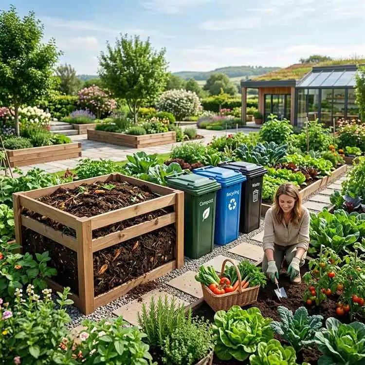

Stackly Zero Waste was born from a simple belief — that waste is not waste until it's wasted. We transform discarded materials into resources, empowering communities and businesses to close the loop.

Stackly Zero Waste is India's leading integrated waste management company. We work with corporates, residential communities, institutions, and governments to design and implement zero-waste systems that are practical, scalable, and impactful.
Our holistic approach combines technology, community engagement, and regulatory expertise to turn waste challenges into sustainable opportunities — for businesses, for cities, and for the planet.
End-to-end management of dry, wet, e-waste, and hazardous materials.
Training and integrating waste-pickers into formal, dignified livelihoods.
Real-time tracking and reporting through our proprietary waste management platform.
Every decision at Stackly is driven by these foundational principles that keep us honest, innovative, and impact-focused.
Environmental outcomes guide every solution we design. We measure success by the carbon we save and the landfills we avoid.
We continuously explore new technologies and methods to make waste management more effective and accessible.
We build systems that uplift informal waste workers, women entrepreneurs, and underserved communities.
Our clients see exactly where their waste goes and the environmental impact it creates — no greenwashing, ever.
Bold ideas mean nothing without flawless execution. We are obsessive about delivering on our commitments.
We build for decades, not quarters. Our partnerships and infrastructure are designed to last and to scale.
Passionate changemakers united by a single goal — making zero waste the new normal for India.
IIT Delhi alumnus with 15+ years in sustainability strategy. Former McKinsey partner who left consulting to build the company he always wished existed.
Environmental engineer and IISc PhD with expertise in bio-methanation and composting technology. Holds 7 patents in organic waste processing.
Supply chain veteran with experience scaling logistics networks across 20+ Indian cities. Transformed Stackly's field operations from 3 to 28 cities in 4 years.
Brand strategist and communication expert who has led campaigns that have shifted public perception of waste management across urban India.
Ex-Swiggy engineering lead who built Stackly's waste-tracking platform serving 500+ enterprise clients with real-time analytics.
Social entrepreneur with 12 years of experience integrating informal waste-pickers into formal economies across Kerala, Karnataka, and Tamil Nadu.
From a small Bengaluru startup to India's most trusted waste management company.
Founded in Bengaluru with 3 employees and a single composting unit. Processed 2 tonnes of food waste per day from local restaurants.
Raised ₹12 Cr in Series A funding. Expanded to Mumbai, Pune, and Hyderabad. Launched the first EPR plastics compliance program.
Launched Stackly OS — our proprietary waste-tracking SaaS platform. Crossed 100 enterprise clients within the first 6 months of launch.
Signed MoUs with 5 State Pollution Control Boards. Launched the India Zero Waste Cities Initiative in partnership with Ministry of Urban Development.
Raised ₹250 Cr Series C. Named in Time Magazine's 100 Most Influential Climate Companies. 500+ clients. 28 cities. 2M+ tonnes diverted from landfills.